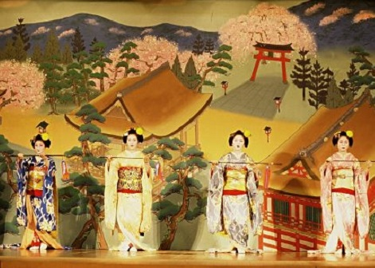

Japanese Theatre
Noh, Kabuki, and Bunraku are the three typical distinctions made of Japanese traditional theatre. Noh theatre has been around since the fourteenth century, consisting of five Noh plays and comedic ‘Kyogen’ intermissions. Traditional tales of supernatural apparitions with intricate masks and costumes are common for this type of musical. Originally, acting in a Kyogen piece was open to all genders, up until 1450. Kabuki, being the more popular form of theatre, stylizes drama in a way contrasting the presentation of Noh. With extravagant dances and make-up, Kabuki is the more ‘bizarre’ of traditional Japanese theatre and used real sword in sword fight scenes up until the 1680s. Lastly, Bunraku is the oldest form of puppet theatre in Japan. They would use puppets between three and four feet tall, without hiding the puppeteers from the audience but instead dressing them in all black as a contrast the bright puppet costumes.
